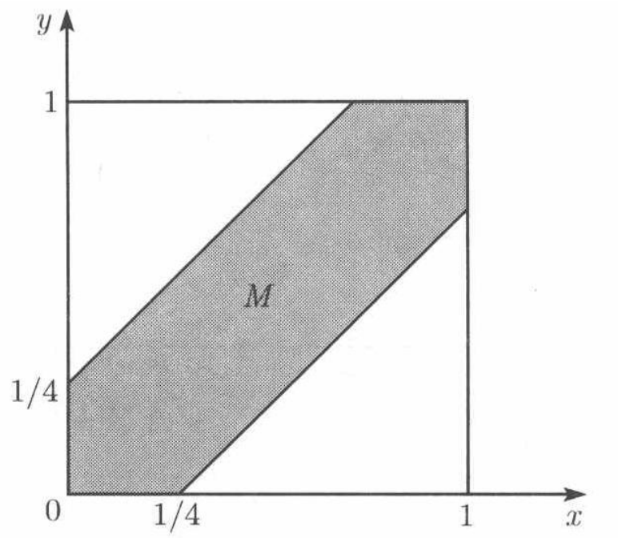

样本空间与概率2
Contents
统计与大数据分析
样本空间与概率2
肖朦，2023
样本空间与概率2#
连续模型#
试验的样本空间是连续集合：赌场幸运轮转盘
图形方法
例：A和B约定见面，各自将迟到0-1小时。先来者等待15分钟后将离开。
A和B见到的概率多大？
M={(x,y)| |x-y|<=1/4, 0<=x<=1, 0<=y<=1}
{kind=link}
1 - 3/4*3/4 = 7/16
Python连续随机数产生#
import numpy as np
x = np.random.rand()
x
0.1133014496432807
x = np.random.rand(5)
x
array([0.57695757, 0.5972446 , 0.37231573, 0.78900149, 0.1682276 ])
np.random.shuffle(x)
x
array([0.57695757, 0.78900149, 0.37231573, 0.1682276 , 0.5972446 ])
np.random.permutation(x)
array([0.57695757, 0.5972446 , 0.78900149, 0.1682276 , 0.37231573])
x
array([0.57695757, 0.78900149, 0.37231573, 0.1682276 , 0.5972446 ])
arr = np.arange(9).reshape((3, 3))
arr
array([[0, 1, 2],
[3, 4, 5],
[6, 7, 8]])
np.random.permutation(arr)
array([[0, 1, 2],
[6, 7, 8],
[3, 4, 5]])
## A和B约定见面，各自将迟到0-1小时。先来者等待15分钟后将离开。
## A和B见到的概率多大？
import numpy as np
import collections
import matplotlib.pyplot as plt
import seaborn as sns
ab = np.random.rand(2,10000)
print(ab)
f, axs = plt.subplots(1,2)
sns.histplot(ab[0],stat='probability',ax=axs[0])
sns.histplot(ab[1],stat='probability',ax=axs[1])
[[0.66309364 0.97718538 0.21344191 ... 0.59485344 0.18663937 0.95481032]
[0.49019835 0.99786976 0.62863356 ... 0.37500946 0.68080535 0.87259677]]
<AxesSubplot:ylabel='Probability'>
A和B到达的时间差符合什么分布？
AB相差0-10分钟到达的概率和相差10-20分钟到达的概率相等吗？
sns.histplot(ab[0]-ab[1],stat='probability')
<AxesSubplot:ylabel='Probability'>
counter = collections.Counter(abs(ab[0]-ab[1])<0.25)
print(counter)
7/16
Counter({False: 5716, True: 4284})
0.4375
## 从分布的积分图形得到概率
f, axs = plt.subplots(1)
print(ab[0],ab[1])
sns.ecdfplot(abs(ab[0]-ab[1]),ax=axs)
x_special = 0.25
for line in axs.get_lines():
x,y = line.get_data()
ind = np.argwhere(x > x_special)[0,0] # first index where x is larger than x_special
axs.text(x_special,y[ind], f' {y[ind]:.4f}', ha='left', va='top') # maybe color=line.get_color()
axs.axvline(x_special, linestyle='--', color='#cfcfcf', lw=2, alpha=0.75)
plt.show()
[0.66309364 0.97718538 0.21344191 ... 0.59485344 0.18663937 0.95481032] [0.49019835 0.99786976 0.62863356 ... 0.37500946 0.68080535 0.87259677]
条件概率#
在给定部分信息的基础上对试验结果的推断
连续掷2次骰子，已知点数总和为9，第一次为6的可能性多大？
作业，用python的随机数实验得到该事件的概率
条件概率定义:
条件概率是个概率律
归一化：
可加性：
例：连续抛3次硬币，A={正面比反面次数多}，B={第一次抛出正面}，P (A|B)=?
A={HHH,HHT,HTH,HTT,THH,THT,TTH,TTT}
B={HHH,HHT,HTH,HTT}
P(A|B)=3/4
乘法规则#
例：从52张扑克牌中连续不放回地抽3张牌，没有红桃的概率
第一张没有红桃 \(P(A_1)\)：39/52
第二张没有红桃 \(P(A_2|A_1)\)：38/51
第三张没有红桃 \(P(A_3|A_1\cap A_2)\)：37/50
例：一个班有4个本科生和12个研究生，随机将他们分成4个4人组，每组分到一个本科生的概率多大？
分16个位子的问题
本科生1、2分到不同组 \(P(A_1)\)：12/15
本科生1、2、3分到不同组 \(P(A_2|A_1)\)：8/14
本科生1、2、3、4分到不同组 \(P(A_3|A_1\cap A_2)\)：4/13
12/15 * 8/14 * 4/13
0.14065934065934066
import numpy as np
a=[1,0]
s=[4,12]
result=np.repeat(a,s)
result
array([1, 1, 1, 1, 0, 0, 0, 0, 0, 0, 0, 0, 0, 0, 0, 0])
result.reshape(4,4)
array([[1, 1, 1, 1],
[0, 0, 0, 0],
[0, 0, 0, 0],
[0, 0, 0, 0]])
import random
k=0;sample=10000
for j in range(sample):
random.shuffle(result) #随机排列，改变result的值
result2d=result.reshape(4,4) #分为4组
k+= np.prod([i.sum() for i in result2d]) #每组总和均为1时为真
print (k/sample)
0.1493
全概率定理#
全概率定理： 若\(A_1 \cdots A_n\)互不相容，并构成样本空间的一个分割。则 $\(P(B) = \sum_{i=1}^{n} P(A_i\cap B) = \sum_{i=1}^{n} P(A_i)P(B|A_i)\)$
用于推断B事件发生的概率，通常已知A条件下的B概率
例：你参加棋类比赛，50%的一类棋手，你赢的概率是0.3；25%的一类棋手，你赢的概率是0.4；25%的三类棋手，你赢的概率是0.5；随机抽取一位棋手与你比赛，你赢的概率是？
B：赢得比赛的概率
A1: 与一类棋手比赛
A2: 与二类棋手比赛
A3: 与三类棋手比赛
贝叶斯准则#
贝叶斯准则： 若\(A_1 \cdots A_n\)互不相容，并构成样本空间的一个分割。则
用于因果推论：很多原因\(A_i\)造成结果B，现有结果B，推断由某个原因\(A_1\)造成的概率
后验概率\(P(A_i|B)\)
先验概率\(P(A_i)\)
例：某种疾病在人群中的患病率是0.1%。
若患病，检测为阳性的的概率是95%。
若未患病，检测为阴性的概率是95%。
现一人检测出阳性，他患病的概率是？
A1：患病，P(A1)=0.1%
A2：未患病，P(A2)=99.9%
B：阳性
P(B|A1)=95%
P(B|A2)= 5%
a=0.001*0.95
b=0.999*0.05
print (a,b,a/(a+b))
0.00095 0.04995 0.018664047151277015
## 连续三次测量
a=0.001*(0.95**3)
b=0.999*(0.05**3)
print (a,b,a/(a+b))
0.000857375 0.00012487500000000004 0.8728684143547976
独立事件#
若P(A|B) = P(A)，则A,B独立
P(A|B) = P(A\(\cap\)B)/P(B) = P(A)
独立事件发生概率 P(A\(\cap\)B) = P(A)P(B)
不相容和独立是两个概念！
\[A \cap B = \emptyset\]\[P(A\cap B) = 0 \neq P(A)P(B)\]
例：掷4个面的骰子，A={第一次得到1}，B={两次总和为5}，A,B是否独立？
两次所有组合4x4=16
P(A）= 1/4
B: {(1,4),(2,3),(3,2),(4,1)}
P(B）= 4/16
P(A \(\cap\) B) = 1/16
P(A \(\cap\) B)= P(A)P(B)
A,B独立
若B中总和为6,7,8呢？
条件独立#
在给定条件下A,B独立： \(P(A \cap B | C) = P(A|C)P(B|C)\)
\(P(A|B \cap C) = P(A|C)\), 给定C发生，进一步假定B发生，不影响A发生的概率
A,B互相独立 => A,B条件独立？
A,B条件独立 => A,B互相独立？
例1：抛一枚均匀的硬币两次，
H1:第一次正面朝上
H2:第二次正面朝上
D: 两次实验结果不同
H1, H2互相独立。在条件D下，
\(P(H1\cap H2|D)=0 \neq P(H1|D)P(H2|D)= 1/4\)
H1,H2不独立
例2：两枚硬币，一枚为蓝，一枚为红，硬币不均匀，蓝色抛到正面的概率是0.99，红色抛到正面的概率为0.01。现随机选一枚硬币进行两次抛掷。第一次抛到正面的事件H1,第二次抛到正面的事件H2。
H1和H2在硬币为蓝色的条件下独立？
H1和H2互相独立？
硬币为蓝色：B
\(P(H1|B) = 0.99\)
\(P(H2|B) = 0.99\)
\(P(H1\cap H2|B) = 0.99\cdot 0.99 = P(H1|B)P(H2|B)\)
\(P(H1 \cap H2) = 0.49 \neq P(H1) P(H2) = 0.25\)
独立实验和二项概率#
一系列独立试验组成的试验，若每个阶段的试验结果只有两种可能，称为独立的伯努利试验序列：抛硬币，下雨
单次伯努利试验发生概率:p
n次抛硬币，k次朝上的概率: 二项概率
其中二项式系数，从n个元素中抽取k个的可能组合
排列组合#
排列：有序
组合：无序
例1：n个元素的集合的子集总个数？
每个元素进入或不进入子集，2种可能，子集总个数 \(2^n\)
例2：n选k个排列
第一个元素有n种选择，第二个有n-1…，共 \(n(n-1)\cdots (n-k+1)\)种选择，写为\(\frac{n!}{(n-k)!}\)
例3：n选k个组合
选出的排列有\(\frac{n!}{(n-k)!}\)个，对任意一组k个元素，有\(k(k-1)\cdots 1= k!\)种排列方式，共 \(\frac{n!}{(n-k)!k!}\)
Python实现排列组合#
## 计算n选k的排列
import math
for k in range(5):
p0 = math.perm(5, k)
p1 = math.comb(5, k)
print("5选",k, ", 排列 ", p0, ", 组合 ", p1)
5选 0 , 排列 1 , 组合 1
5选 1 , 排列 5 , 组合 5
5选 2 , 排列 20 , 组合 10
5选 3 , 排列 60 , 组合 10
5选 4 , 排列 120 , 组合 5
## 穷举所有排列
import itertools
import scipy.special as sp
import math
x=np.arange(1,5)
print(x)
[1 2 3 4]
y=list(itertools.permutations(x,3)) ## 选出3个的所有排列
print(y)
print("4选3的排列个数=", len(y))
[(1, 2, 3), (1, 2, 4), (1, 3, 2), (1, 3, 4), (1, 4, 2), (1, 4, 3), (2, 1, 3), (2, 1, 4), (2, 3, 1), (2, 3, 4), (2, 4, 1), (2, 4, 3), (3, 1, 2), (3, 1, 4), (3, 2, 1), (3, 2, 4), (3, 4, 1), (3, 4, 2), (4, 1, 2), (4, 1, 3), (4, 2, 1), (4, 2, 3), (4, 3, 1), (4, 3, 2)]
4选3的排列个数= 24
z=list(itertools.combinations(x,3)) ## 选出3个的所有组合
print(z)
print("4选3的组合个数=", len(z), ",scipy 计算",sp.binom(4, 3),",math 计算",math.comb(4, 3))
[(1, 2, 3), (1, 2, 4), (1, 3, 4), (2, 3, 4)]
4选3的组合个数= 4 ,scipy 计算 4.0 ,math 计算 4